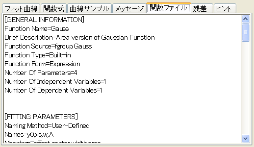

<h1 class="firstheading">『関数ファイル』タブ (下側パネル)</h1>
<p>「<b>関数ファイル</b>」タブ」を使って、関数定義ファイル(FDF)の詳細を表示します。</p>
<dl>
<dd><span style="color: #0000ff; text-decoration: underline;"></span></dd>
</dl>
<p>参照：『フィット関数ファイル (FDF)』および『<a href="../UserGuide/The_Fitting_Function_Organizer_Dialog_Box.html" title="ユーザガイド:フィット関数オーガナイザダイアログボックス">フィット関数オーガナイザダイアログボックス</a>』をご覧ください。</p>
